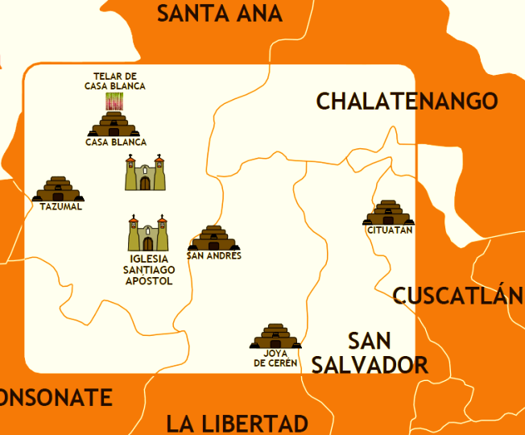

Rutas turísticas de El Salvador
El Salvador, popularmente conocido como el Pulgarcito de América, es un país que posee diversas rutas turísticas que permiten a los visitantes disfrutar de aspectos como la gastronomía, la naturaleza, el ecosistema volcánico único del país, la arqueología, la arquitectura colonial, la aventura o el surf, pueblos vivos, entre otros.
Debido a la diversidad de opciones se han creado diversas rutas turísticas de El Salvador que agrupan los destinos existentes en una zona geográfica y que comparten características en común, para que puedan ser visitados en unas pocas horas o en un solo día.
Por lo general estos recorridos se hacen por medio de guías turísticos los cuales pueden encontrarse en las localidades de la ruta o por medio de algún operador turístico salvadoreño.
La ruta turística más visitada de El Salvador es la ruta Sol y Playa que comprende la zona costera del país y en segundo lugar de popularidad se encuentra la ruta de Las Flores, la cual comprende algunos municipios del occidente del país.
Estas rutas han sido creadas para ofrecer a los turistas nacionales y extranjeros una opción para que puedan conocer y descubrir la belleza natural de los paisajes, la cultura y su gente. Al mismo tiempo el turismo contribuye al desarrollo local ya que permite la generación de empleo.
rutas mas importantes
Ruta arqueológica
- La Joya de Cerén
- Chalchuapa
- San Andrés
- Santa Ana
RUTA DE LAS FLORES
- Ahuachapán
- Apaneca
- Juayúa
- Nahuizalco
Ruta de las mil cumbre
- Bosque Chahuantique
- Ciudad Alegría
- Laguna El Jojotal
RUTA FRESCA
- La Palma
- San Ignacio
- Citalá
RUTA SOL Y PLAYA
Si las culturas antiguas llaman tu atención y quieres conocer más sobre ellas, no te puedes perder lo que la ruta arqueológica tiene para ofrecerte. Después de todo, este paseo por El Salvador puede transportarte a una gran variedad de culturas y costumbres que debes conoce
Si estás interesado, todo lo que debes hacer es continuar leyéndonos.

Conoce la ruta arqueológica de El Salvador
Como ya debes saber, la ruta arqueológica se trata de una de las atracciones turísticas que ofrece este país latinoamericano
Gracias a ella, quien la visite podrá llegar a conocer mucho más acerca de la vida y costumbres de la cultura Maya, Lenca y Pipil.
¿Qué lugares debo visitar en la ruta arqueológica?
 Debido a su reconocimiento internacional, este se trata del primer espacio que debemos mencionar. Desde la erupción del Volcán de Loma Caldera en el año 600 D.C. esta zona ha conservado los vestigios de la vida que ocurría en esta zona.
Actualmente, de las 18 estructuras encontradas, 10 han sido excavadas y abiertas al público.

Esta se trata de la zona arqueológica más grande del país ya de dentro de ella se subdividen otros focos más pequeños. Entre los espacios arqueológicos que hay en la zona están Tazumal, Casa Blanca, Trapiche, Las Victorias y Pampe.
Por otra parte, otro sitio arqueológico resaltante es el de San Andrés. Después de todo, solo se encuentra a 3km de la primera que mencionamos. Sus 35 hectáreas de terreno lo convierten en uno de los territorios arqueológicos más extensos que puedes visitar en El Salvador

Asimismo, Santa Ana se convierte en la segunda ciudad más importante del país con sus múltiples estructuras. Entre ellas, están comprendidos espacios como: su Catedral, su Teatro y el Palacio Municipal. Tal es el valor de estas que la primera fue declarada en 1995 como Patrimonio Cultural.
¿Donde queda?
Si disfrutas del turismo ecológico y de los paisajes naturales, entonces lo que te ofrece la ruta de las flores te encantará. Después de todo, este recorrido por la cordillera Apaneca-Ilamatepeq te llevará a lugares preciosos.
Además, no solo lo serán desde el punto de vista estético, sino también del histórico y cultural.
Dentro de los atractivos con los que cuenta esta zona podemos nombrar el centro histórico de la ciudad. Después de todo, en ella se encuentra la Iglesia Nuestra Señora de la Asunción. Asimismo, está el Centro para la Cultura y las Artes Alfredo Espino y el conocido pasaje La Concordia.
Esta ciudad es la que, con 1,470 mts, se encuentra a mayor altura sobre el nivel del mar. Acá, quienes se hospeden en los hoteles podrán disfrutar de la vista a dos espectaculares lagunas. La primera de ellas es conocida como “Las Ninfas” y la otra como “Laguna Verde”.

Al igual que la anterior, sus cultivos de café se han convertido en unos de los más importantes y de mejor calidad. Asimismo, sus cultivos de plantas ornamentales y su cuidada propuesta gastronómica le añaden otros puntos de interés a este paraje.
La característica que destaca a este pueblo se trata de su variada propuesta en artesanías de mimbre y tule. Además, también existe la posibilidad de visitar el Museo Conmemorativo Pipil con el cual rememorar los orígenes de la cultura que ahora habita los terrenos.
Debido a la gran diversidad demográfica que presenta El Salvador en él es posible disfrutar tanto de los paisajes boscosos como costeros. Gracias a la ruta de las mil cumbres es posible conocer un poco de todo lo que ofrece esta localidad.
¿Qué es la ruta de las mil cumbres?
Debido a la gran diversidad demográfica que presenta El Salvador en él es posible disfrutar tanto de los paisajes boscosos como costeros. Gracias a la ruta de las mil cumbres es posible conocer un poco de todo lo que ofrece esta localidad.
Esta se trata de otra de las reservas naturales que se pueden encontrar en este camino. En ella, hacen vida especies tan poco comunes como el mono araña y la mariposa Big Blue. Por ello, este bosque tropical se ha convertido en uno de los mejores para practicar ecoturismo
Esta se trata de una ciudad que se ha vuelto una parada icónica para quien transita la ruta de las mil cumbres. En esta localidad del departamento de Usulután la belleza natural de se encuentra con la riqueza cultural de los habitantes. Por ello, existe un sinfín de atractivos que disfrutar en ella
Otra laguna famosa que se encuentra en el recorrido de la ruta de las mil cumbres es la de El Jojotal. La rica biodiversidad de este paraje y sus mansas aguas son capaces de llenar de tranquilidad a quien las observe. Asimismo, la variada cantidad de plantas, aves y peces, los amantes de la naturaleza siempre tendrán algo nuevo que observar.
¿De dónde viene el nombre “ruta fresca”?
A pesar de que en un principio el nombre pueda parecer un poco arbitrario, la verdad es que tiene una razón de ser. Esta se debe a que todas las localidades que la componen disfrutan de un clima en extremo agradable.
¿Por dónde pasa la ruta fresca?
La extensión de la ruta fresca hace que esta se despliegue por 3 municipios diferentes. Los nombres de los mismos son La Palma, San Ignacio y Citalá. Todos estos se encuentran ubicados en el departamento de Chalatenango.

¿Qué lugares debo visitar al pasear por la ruta fresca?
Este municipio se ubica al norte de Chalatenango y es la sede del museo Fernando Llort. Asimismo, en su ciudad los turistas podrán visitar las plazas con vendedores de artesanías, así como los restaurantes y hostales de la zona
La vibra de antaño que ofrece este pueblo es imposible de ignorar. Después de todo, sus calles empedradas rodeadas de verdes montañas dan la sensación de estar en otra época. De entre todos, este se trata de uno de los mejores para hacer ecoturismo.
En esta ciudad, podrás disfrutar del agradable clima, hermosos paisajes y deliciosos platillos. Además, también contarás con la oportunidad de realizar actividades de agroecoturismo.
Si te gusta divertirte a la luz del sol y con el sonido de las olas de fondo, la ruta sol y playa definitivamente es para ti. Después de todo, en ella podrás conocer todos los lugares turísticos y playeros más conocidos de El Salvador.
¿Qué lugares debo visitar en la ruta sol y playa?
Debido a la gran extensión de la costa de El Salvador, son muchas las playas por en el recorrido. Asimismo, en el viaje también podrás pasar por hoteles y restaurantes que te harán enamorarte del clima tropical de la zona.
A continuación, te hablaremos de las paradas más comunes de la ruta sol y playa: